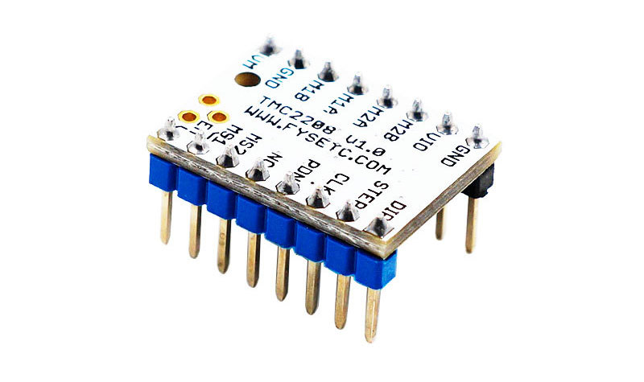
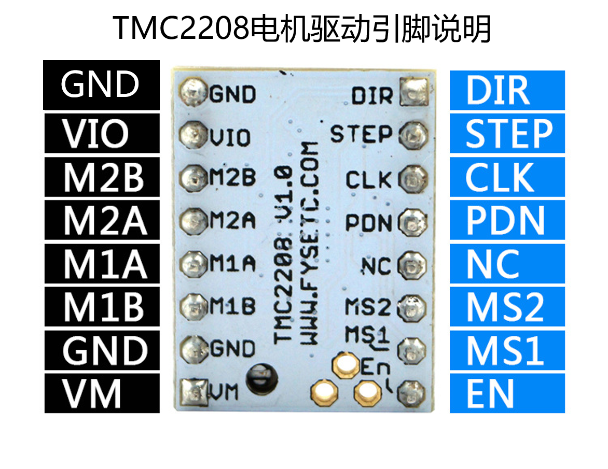
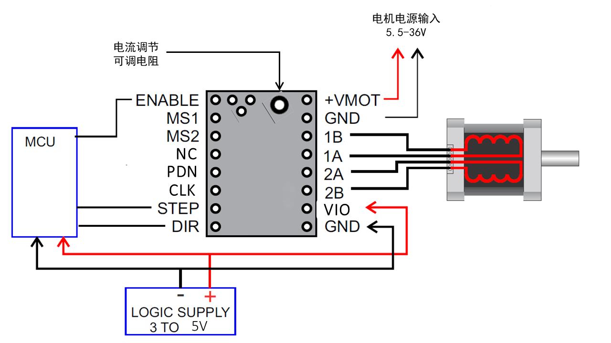
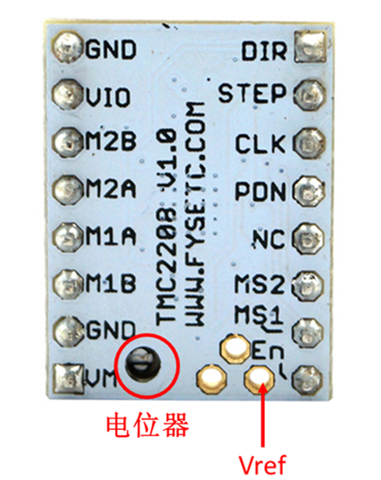
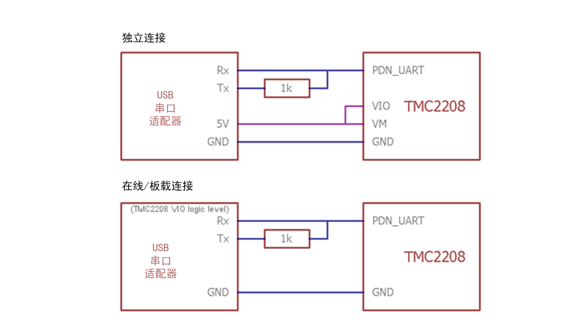

TMC2208中文版
产品介绍¶

TMC2208是一款超静音的两相步进电机驱动芯片，持续驱动电流1.4A，峰值电流2A，电压范围4.75V-36V，256细分；灵活的microPlyer插值单元，可提供高达256的细分，即使是在脉冲频率有限的系统中仍可完美地实现正弦控制；由于stealthChop2超静音技术在3D打印中被广泛应用，因此这些组件的设计也与现有3D打印机电子设备兼容，省去了重新设计所产生的昂贵费用。具有标准的step/dir接口，使用起来简单方便。可以替代原有的TMC2100，更低的发热量，特别适合3D打印市场。
主要特点¶
- UART配置接口（9600-500k波特）
- 功率管内置驱动电流1.4A峰值电流2A，电压范围4.75V-36V
- 多达256个本地微步（无插值）
- CoolStep™电流动态调节技术，可节省70％的能源
- stealthChop2 - 比stealthChop更快的电机加速/减速
- dcStep™，stallGuard2™失速检测技术
- 根据速度自动进行stealthChop和spreadCycle切换
- 硬件兼容StepStick和Pololu A4988步进驱动器
- 底部PCB一侧的元件可以获得更好的散热效果
- 自动待机电流减少
- StealthChop静音技术
- 高度动态的电机控制斩波器
规格¶
| Model | TMC2208 |
|---|---|
| Interface | Step/Dir |
| Configuration | CFG Pins or UART |
| Native Microsteps | up to 1/256 |
| microPlyer Microsteps | 1/256 |
| Logic Voltage (VIO) | 3-5V |
| Motor Voltage (VM ) | 5.5-36V |
| Motor Phase Current max | 1.2A RMS, 2.0A Peak |
| Internal V- Regulator | enabled |
| RDSon | <=0.3 Ohm |
| stealthChop (quiet) | yes |
| spreadCycle | yes |
| coolStep | no |
| stallGuard | no |
| dcStep | no |
引脚说明¶

| Pin | 功能 |
|---|---|
| Power Supply | |
| GND | Ground |
| VM | Motor Supply Voltage |
| VIO | Logic Supply Voltage |
| Motor Outputs | |
| M1A | Motor Coil 1 |
| M1B | Motor Coil 1 |
| M2A | Motor Coil 2 |
| M2B | Motor Coil 2 |
| Control Inputs | |
| STEP | Step-Signal Input |
| DIR | Direction-Signal Input |
| TMC2208 | |
| EN | Enable Motor Outputs: GND=on, VIO=off |
| MS1 | Step-Configuration |
| MS2 | Step-Configuration |
| PDN | UART and Auto Power Down Control: GND=on, VIO=off |
| CLK | Clock Input |
| DIAG | Diagnostics Output |
| INDEX | Index Output |
| VREF | Analog Reference Voltage |
接口资源¶
接线图示¶

Tip
TMC2208输出给电机的持续工作电流最高为1.4A，峰值电流最高为2A。所以驱动模块参考电压最好不要超过1V，同时要对驱动模块做好散热，否则将会影响驱动模块的寿命。
电机电流设置¶

Note
- Vref测量Gnd 以及电位器中间端的电压。
- 测量电压时务必不要连接电机，否则容易烧毁驱动。
- 测量电压时应接通电源，不要仅仅连接USB供电。
- 请特别注意方向，切勿插反！
细分设置¶
| MS2（-） | MS1（-） | 细分（-） | 插值（-） | 模式（-） |
|---|---|---|---|---|
| 低 | 高 | 1⁄2 | 1⁄256 | stealthChop2 |
| 高 | 低 | 1⁄4 | 1⁄256 | stealthChop2 |
| 低 | 低 | 1⁄8 | 1⁄256 | stealthChop2 |
| 高 | 高 | 1⁄16 | 1⁄256 | stealthChop2 |
设置方法¶
使用TMC2208配置器，您可以更改设置并通过UART接口编程Trinamic TMC2208的OTP（一次性可编程）存储器。
运行程序¶
- 安装ScriptCommunicator
- 下载TMC2208.scez
- 使用ScriptCommunicator启动TMC2208.scez文件：ScriptCommunicator TMC2208.scez
- 选择正确的串行端口并单击连接
- 直接传输配置器中的修改
Tip
OTP位只能编程一次。 如果启用spreadCycle，则TOFF不能为0（空）。
硬件连接¶

您可以使用每个RS232 0-5V逻辑电平的串行适配器（例如FTDI-Breakout），并且可以使用SilentStepStick测试仪/编程器作为连接适配器。
Tip
必须在TMC2208 SilentStepStick上关闭PDN_UART引脚旁边的跳线，以通过引脚头使能引脚访问。
商店¶
技术支持¶
请将任何技术问题提交到我们的论坛